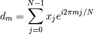
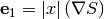
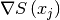
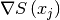

MaxEnt dialog.
Table of Contents
Runs Maximum Entropy method on every spectrum of an input workspace. It currently works for the case where data and image are related by a 1D Fourier transform.
| Name | Direction | Type | Default | Description |
|---|---|---|---|---|
| InputWorkspace | Input | MatrixWorkspace | Mandatory | An input workspace. |
| ComplexData | Input | boolean | False | If true, the input data is assumed to be complex and the input workspace is expected to have an even number of histograms (2N). Spectrum numbers S and S+N are assumed to be the real and imaginary part of the complex signal respectively. |
| ComplexImage | Input | boolean | True | If true, the algorithm will use complex images for the calculations. This is the recommended option when there is no prior knowledge about the image. If the image is known to be real, this option can be set to false and the algorithm will only consider the real part for calculations. |
| PositiveImage | Input | boolean | False | If true, the reconstructed image is only allowed to take positive values. It can take negative values otherwise. This option defines the entropy formula that will be used for the calculations (see next section for more details). |
| AutoShift | Input | boolean | False | Automatically calculate and apply phase shift. Zero on the X axis is assumed to be in the first bin. If it is not, setting this property will automatically correct for this. |
| ResolutionFactor | Input | m | 1 | An integer number indicating the factor by which the number of points will be increased in the image and reconstructed data |
| A | Input | number | 0.4 | A maximum entropy constant |
| ChiTarget | Input | number | 100 | Target value of Chi-square |
| ChiEps | Input | number | 0.001 | Required precision for Chi-square |
| DistancePenalty | Input | number | 0.1 | Distance penalty applied to the current image at each iteration. |
| MaxAngle | Input | number | 0.05 | Maximum degree of non-parallelism between S and C. |
| MaxIterations | Input | m | 20000 | Maximum number of iterations. |
| AlphaChopIterations | Input | m | 500 | Maximum number of iterations in alpha chop. |
| EvolChi | Output | MatrixWorkspace | Mandatory | Output workspace containing the evolution of Chi-sq. |
| EvolAngle | Output | MatrixWorkspace | Mandatory | Output workspace containing the evolution of non-paralellism between S and C. |
| ReconstructedImage | Output | MatrixWorkspace | Mandatory | The output workspace containing the reconstructed image. |
| ReconstructedData | Output | MatrixWorkspace | Mandatory | The output workspace containing the reconstructed data. |
The maximum entropy method (MEM) is used as a signal processing technique for reconstructing
images from noisy data. It selects a single
image from the many images which fit the data with the same value of the statistic,
 . The maximum entropy method selects from this feasible set of images, the one which
has minimum information (maximum entropy).
More specifically, the algorithm maximizes the entropy
. The maximum entropy method selects from this feasible set of images, the one which
has minimum information (maximum entropy).
More specifically, the algorithm maximizes the entropy  subject to the constraint:
subject to the constraint:

where  are the experimental data,
are the experimental data,  the associated errors, and
the associated errors, and  the calculated or reconstructed data. The image is a set of numbers
the calculated or reconstructed data. The image is a set of numbers
 related to the measured data via a 1D Fourier transform:
related to the measured data via a 1D Fourier transform:

Note that even for real input data the reconstructed image can be complex, which means that both the real and imaginary parts will be taken into account for the calculations. This is the default behaviour, which can be changed by setting the input property ComplexImage to False. Note that the algorithm will fail to converge if the image is complex (i.e. the data does not satisfy Friedel’s law) and this option is set to False. For this reason, it is recomended to use the default when no prior knowledge is available.
The entropy is defined on the image  as:
as:
![S = \sum_j \left[ \sqrt{x_j^2 + A^2} - x_j \sinh^{-1}\left(\frac{x_j}{A}\right) \right]](../_images/math/6de59187f0381a62bb0fc6d9fb71c86e94f7f2cf.png)
or

where  is a constant and the formula which is used depends on the input property PositiveImage: when it is
set to False the first equation will be applied, whereas the latter expresion will be used if this property
is set to True. The sensitive of the reconstructed image to reconstructed
image will vary depending on the data. In general a smaller value would preduce a
sharper image. See section 4.7 in Ref. [1] for recommended strategy to selected .
is a constant and the formula which is used depends on the input property PositiveImage: when it is
set to False the first equation will be applied, whereas the latter expresion will be used if this property
is set to True. The sensitive of the reconstructed image to reconstructed
image will vary depending on the data. In general a smaller value would preduce a
sharper image. See section 4.7 in Ref. [1] for recommended strategy to selected .
The implementation used to find the solution where the entropy is maximized
subject to the constraint in follows the approach by Skilling & Bryan [2], which is an
algorithm that is not explicitly using Lagrange multiplier. Instead, they
construct a subspace from a set of search directions to approach the maximum entropy solution. Initially,
the image  is set to the flat background and the search directions are constructed
using the gradients of
is set to the flat background and the search directions are constructed
using the gradients of  and :
and :


where  stands for a componentwise multiplication between vectors
stands for a componentwise multiplication between vectors
 and
and  . The algorithm next uses
a quadratic approximation to determine the increment
. The algorithm next uses
a quadratic approximation to determine the increment  that moves the image
one step closer to the solution:
that moves the image
one step closer to the solution:

There are four output workspaces: ReconstructedImage and ReconstructedData contain the image and
calculated data respectively, and EvolChi and EvolAngle record the algorithm’s evolution.
ReconstructedData can be used to check that the calculated data approaches the experimental,
measured data, and ReconstructedImage corresponds to its Fourier transform. If the input data are real they
contain twice the original number of spectra, as the Fourier transform will be a complex signal
in general. The real and imaginary parts are organized as follows (see Table 1): assuming your input workspace has
 spectra, the real part of the reconstructed spectrum
spectra, the real part of the reconstructed spectrum  corresponds to
spectrum in the output workspaces ReconstructedImage and ReconstructedData, while the imaginary part can be found in spectrum
corresponds to
spectrum in the output workspaces ReconstructedImage and ReconstructedData, while the imaginary part can be found in spectrum  .
.
When the input data are complex, the input workspace is expected to have  spectra, where
real and imaginary parts of input , are arranged in spectra
spectra, where
real and imaginary parts of input , are arranged in spectra  respectively. In other words,
ReconstructedData and ReconstructedImage will contain spectra, where spectra
correspond to the real and imaginary parts reconstructed from the input signal at
in the input workspace (see Table 2 below).
respectively. In other words,
ReconstructedData and ReconstructedImage will contain spectra, where spectra
correspond to the real and imaginary parts reconstructed from the input signal at
in the input workspace (see Table 2 below).
The workspaces EvolChi and EvolAngle record the evolution of and the angle (or
non-parallelism) between  and
and  . Note that the algorithm runs
until a solution is found, and that an image is considered to be a true maximum entropy
solution when the following two conditions are met simultaneously:
. Note that the algorithm runs
until a solution is found, and that an image is considered to be a true maximum entropy
solution when the following two conditions are met simultaneously:

While one of these conditions is not satisfied the algorithm keeps running until it reaches the maximum number of iterations. When the maximum number of iterations is reached, the last reconstructed image and its corresponding calculated data are returned, even if they do not correspond to a true maximum entropy solution satisfying the conditions above. In this way, the user can check by inspecting the output workspaces whether the algorithm was evolving towards the correct solution or not. On the other hand, the user must always check the validity of the solution by inspecting EvolChi and EvolAngle, whose values will be set to zero once the true maximum entropy solution is found.
| Workspace | Number of histograms | Number of bins | Description |
|---|---|---|---|
| EvolChi | M | MaxIterations | Evolution of until the solution is found. Then all values are set to zero. |
| EvolAngle | M | MaxIterations | Evolution of the angle between and , until the solution is found. Then all values are set to zero. |
| ReconstructedImage | 2M | N | For spectrum in the input workspace, the reconstructed image is stored in spectra (real part) and (imaginary part) |
| ReconstructedData | 2M | N | For spectrum in the input workspace, the reconstructed data are stored in spectrum (real part) and (imaginary part). Note that although the input is real, the imaginary part is recorded for debugging purposes, it should be zero for all data points. |
| Workspace | Number of histograms | Number of bins | Description |
|---|---|---|---|
| EvolChi | M | MaxIterations | Evolution of until the solution is found. Then all values are set to zero. |
| EvolAngle | M | MaxIterations | Evolution of the angle between and , until the solution is found. Then all values are set to zero. |
| ReconstructedImage | 2M |  |
For spectrum in the input workspace, the reconstructed image is stored in spectra (real part) and (imaginary part) |
| ReconstructedData | 2M | |
For spectrum in the input workspace, the reconstructed data are stored in spectra (real part) and (imaginary part) |
Example - Reconstruct Fourier coefficients
In the example below, a workspace containing five Fourier coefficients is created and used as input to MaxEnt v1. In the figure we show the original and reconstructed data (left), and the reconstructed image, i.e. Fourier transform (right).
# Create an empty workspace
X = []
Y = []
E = []
N = 200
for i in range(0,N):
x = ((i-N/2) *1./N)
X.append(x)
Y.append(0)
E.append(0.001)
# Fill in five Fourier coefficients
# The input signal must be symmetric to get a real image
Y[5] = Y[195] = 0.85
Y[10] = Y[190] = 0.85
Y[20] = Y[180] = 0.85
Y[12] = Y[188] = 0.90
Y[14] = Y[186] = 0.90
CreateWorkspace(OutputWorkspace='inputws',DataX=X,DataY=Y,DataE=E,NSpec=1)
evolChi, evolAngle, image, data = MaxEnt(InputWorkspace='inputws', chiTarget=N, A=0.0001)
print "First reconstructed coefficient: %.3f" % data.readY(0)[5]
print "Second reconstructed coefficient: %.3f" % data.readY(0)[10]
print "Third reconstructed coefficient: %.3f" % data.readY(0)[20]
print "Fourth reconstructed coefficient: %.3f" % data.readY(0)[12]
print "Fifth reconstructed coefficient: %.3f" % data.readY(0)[14]
Output:
First reconstructed coefficient: 0.847
Second reconstructed coefficient: 0.846
Third reconstructed coefficient: 0.846
Fourth reconstructed coefficient: 0.896
Fifth reconstructed coefficient: 0.896

Example - Reconstruct a real muon dataset
In this example, MaxEnt v1 is run on a pre-analyzed muon dataset. The corresponding figure shows the original and reconstructed data (left), and the real part of the image obtained with MaxEnt v1 and FFT v1 (right).
Load(Filename=r'MUSR00022725.nxs', OutputWorkspace='MUSR00022725')
CropWorkspace(InputWorkspace='MUSR00022725', OutputWorkspace='MUSR00022725', XMin=0.11, XMax=1.6, EndWorkspaceIndex=0)
RemoveExpDecay(InputWorkspace='MUSR00022725', OutputWorkspace='MUSR00022725')
Rebin(InputWorkspace='MUSR00022725', OutputWorkspace='MUSR00022725', Params='0.016')
evolChi, evolAngle, image, data = MaxEnt(InputWorkspace='MUSR00022725', A=0.005, ChiTarget=90)
# Compare MaxEnt to FFT
imageFFT = FFT(InputWorkspace='MUSR00022725')
print "Image at %.3f: %.3f" % (image.readX(0)[44], image.readY(0)[44])
print "Image at %.3f: %.3f" % (image.readX(0)[46], image.readY(0)[46])
print "Image at %.3f: %.3f" % (image.readX(0)[48], image.readY(0)[48])
Output:
Image at -1.359: 0.100
Image at 0.000: 0.009
Image at 1.359: 0.100

Next, MaxEnt v1 is run on a different muon dataset. The figure shows the original and reconstructed data (left), the real part of the image (middle) and its imaginary part (right).
Load(Filename=r'EMU00020884.nxs', OutputWorkspace='EMU00020884')
CropWorkspace(InputWorkspace='EMU00020884', OutputWorkspace='EMU00020884', XMin=0.17, XMax=4.5, EndWorkspaceIndex=0)
RemoveExpDecay(InputWorkspace='EMU00020884', OutputWorkspace='EMU00020884')
Rebin(InputWorkspace='EMU00020884', OutputWorkspace='EMU00020884', Params='0.016')
evolChi, evolAngle, image, data = MaxEnt(InputWorkspace='EMU00020884', A=0.0001, ChiTarget=300, MaxIterations=2500)
# Compare MaxEnt to FFT
imageFFT = FFT(InputWorkspace='EMU00020884')
print "Image (real part) at %.3f: %.3f" % (image.readX(0)[129], image.readY(0)[129])
print "Image (real part) at %.3f: %.3f" % (image.readX(0)[135], image.readY(0)[135])
print "Image (real part) at %.3f: %.3f" % (image.readX(0)[141], image.readY(0)[141])
print "Image (imaginary part) at %.3f: %.3f" % (image.readX(0)[129], image.readY(0)[129])
print "Image (imaginary part) at %.3f: %.3f" % (image.readX(0)[135], image.readY(0)[135])
print "Image (imaginary part) at %.3f: %.3f" % (image.readX(0)[141], image.readY(0)[141])
Output:
Image (real part) at -1.389: -0.079
Image (real part) at 0.000: 0.015
Image (real part) at 1.389: -0.079
Image (imaginary part) at -1.389: -0.079
Image (imaginary part) at 0.000: 0.015
Image (imaginary part) at 1.389: -0.079

Finally, we show an example where a complex signal is analyzed. In this case, the input workspace contains two spectra corresponding to the real and imaginary part of the same signal. The figure shows the original and reconstructed data (left), and the reconstructed image (right).
from math import pi, sin, cos
from random import random, seed
seed(0)
# Create a test workspace
X = []
YRe = []
YIm = []
E = []
N = 200
w = 3
for i in range(0,N):
x = 2*pi*i/N
X.append(x)
YRe.append(cos(w*x)+(random()-0.5)*0.3)
YIm.append(sin(w*x)+(random()-0.5)*0.3)
E.append(0.1)
CreateWorkspace(OutputWorkspace='ws',DataX=X+X,DataY=YRe+YIm,DataE=E+E,NSpec=2)
evolChi, evolAngle, image, data = MaxEnt(InputWorkspace='ws', ComplexData=True, chiTarget=2*N, A=0.001)
print "Image (real part) at %.3f: %.3f" % (image.readX(0)[102], image.readY(0)[102])
print "Image (real part) at %.3f: %.3f" % (image.readX(0)[103], image.readY(0)[103])
print "Image (real part) at %.3f: %.3f" % (image.readX(0)[104], image.readY(0)[104])
Output:
Image (real part) at 0.318: 0.000
Image (real part) at 0.477: 5.842
Image (real part) at 0.637: 0.000

The algorithm allows users to restrict the reconstructed image to positive values only. This behaviour can be selected by setting the input property PositiveImage to true. In this case, the entropy is defined by the expression:
In addition, the algorithm explicitly protects against negative values by setting those to a fraction of the maximum entropy constant A.
In the example below both modes are compared. As the input is a complex signal with expected Fourier transform  ,
i.e. positive,
both modes should produce the same results (note that the maximum entropy constant A typically needs to be set to smaller values for positive
image in order to obtain smooth results).
,
i.e. positive,
both modes should produce the same results (note that the maximum entropy constant A typically needs to be set to smaller values for positive
image in order to obtain smooth results).
from math import pi, sin, cos
from random import random, seed
seed(0)
# Create a test workspace
X = []
YRe = []
YIm = []
E = []
N = 200
w = 3
for i in range(0,N):
x = 2*pi*i/N
X.append(x)
YRe.append(cos(w*x)+(random()-0.5)*0.3)
YIm.append(sin(w*x)+(random()-0.5)*0.3)
E.append(0.1)
CreateWorkspace(OutputWorkspace='ws',DataX=X+X,DataY=YRe+YIm,DataE=E+E,NSpec=2)
evolChi, evolAngle, image, data = MaxEnt(InputWorkspace='ws', ComplexData=True, chiTarget=2*N, A=0.001, PositiveImage=False)
evolChiP, evolAngleP, imageP, dataP = MaxEnt(InputWorkspace='ws', ComplexData=True, chiTarget=2*N, A=0.001, PositiveImage=True)
print "Image at %.3f: %.3f (PositiveImage=False), %.3f (PositiveImage=True)" % (image.readX(0)[102], image.readY(0)[102], imageP.readY(0)[102])
print "Image at %.3f: %.3f (PositiveImage=False), %.3f (PositiveImage=True)" % (image.readX(0)[103], image.readY(0)[103], imageP.readY(0)[103])
print "Image at %.3f: %.3f (PositiveImage=False), %.3f (PositiveImage=True)" % (image.readX(0)[104], image.readY(0)[104], imageP.readY(0)[102])
Output:
Image at 0.318: 0.000 (PositiveImage=False), 0.000 (PositiveImage=True)
Image at 0.477: 5.842 (PositiveImage=False), 5.842 (PositiveImage=True)
Image at 0.637: 0.000 (PositiveImage=False), 0.000 (PositiveImage=True)

By default the input property ComplexImage is set to True and the algorithm will assume complex images for the calculations.
This means that the set of numbers that form the image will have a real and an imaginary part, and both components will be
considered to evaluate the entropy,  , and its derivative, . This effectively means
splitting the entropy (the same applies to its derivative) in two terms,
, and its derivative, . This effectively means
splitting the entropy (the same applies to its derivative) in two terms, ![S\left(x_j\right) = \left[S\left(x_j^{re}\right), S\left(x_j^{im}\right)\right]](../_images/math/cd7bea420375c4a6cb3aeb8badd5d13101be72ad.png) ,
where the first one refers to the real part of the entropy and the second one to the imaginary part. This is the recommended option when no prior knowledge
about the image is available, as trying to reconstruct images that are inherently complex discarding the imaginary part will prevent the algorithm
from converging. If the image is known to be real this property can be safely set to False.
,
where the first one refers to the real part of the entropy and the second one to the imaginary part. This is the recommended option when no prior knowledge
about the image is available, as trying to reconstruct images that are inherently complex discarding the imaginary part will prevent the algorithm
from converging. If the image is known to be real this property can be safely set to False.
The algorithm has an input property, ResolutionFactor, that allows to increase the number of points in the reconstructed image. This is at present done by extending the range (and therefore the number of points) in the reconstructed data. The number of reconstructed points can be increased by any integer factor, but note that this will slow down the algorithm and you may need to increase the number of maxent iterations so that the algorithm is able to converge to a solution.
An example script where the density of points is increased by a factor of 2 can be found below. Note that when a factor of 2 is used, the reconstructed data is twice the size of the original (experimental) data.
Load(Filename=r'EMU00020884.nxs', OutputWorkspace='ws')
CropWorkspace(InputWorkspace='ws', OutputWorkspace='ws', XMin=0.17, XMax=4.5, EndWorkspaceIndex=0)
ws = RemoveExpDecay(InputWorkspace='ws')
ws = Rebin(InputWorkspace='ws', Params='0.016')
evolChi1, evolAngle1, image1, data1 = MaxEnt(InputWorkspace='ws', A=0.0001, ChiTarget=300, MaxIterations=2500, ResolutionFactor=1)
evolChi2, evolAngle2, image2, data2 = MaxEnt(InputWorkspace='ws', A=0.0001, ChiTarget=300, MaxIterations=5000, ResolutionFactor=2)
print "Image at %.3f: %.3f (ResolutionFactor=1)" % (image1.readX(0)[135], image1.readY(0)[135])
print "Image at %.3f: %.3f (ResolutionFactor=2)" % (image2.readX(0)[270], image2.readY(0)[270])
Output:
Image at 0.000: 0.015 (ResolutionFactor=1)
Image at 0.000: 0.079 (ResolutionFactor=2)

In the next example, we increased the density of points by factors of 10, 20 and 40. We show the reconstructed image (left) and
a zoom into the region  and
and  .
.
Load(Filename=r'EMU00020884.nxs', OutputWorkspace='ws')
CropWorkspace(InputWorkspace='ws', OutputWorkspace='ws', XMin=0.17, XMax=4.5, EndWorkspaceIndex=0)
ws = RemoveExpDecay(InputWorkspace='ws')
ws = Rebin(InputWorkspace='ws', Params='0.016')
evolChi1, evolAngle1, image1, data1 = MaxEnt(InputWorkspace='ws', A=0.0001, ChiTarget=300, MaxIterations=2500, ResolutionFactor=1)
evolChi10, evolAngle10, image10, data10 = MaxEnt(InputWorkspace='ws', A=0.0001, ChiTarget=300, MaxIterations=25000, ResolutionFactor=10)
evolChi20, evolAngle20, image20, data20 = MaxEnt(InputWorkspace='ws', A=0.0001, ChiTarget=300, MaxIterations=50000, ResolutionFactor=20)
evolChi40, evolAngle40, image40, data40 = MaxEnt(InputWorkspace='ws', A=0.0001, ChiTarget=300, MaxIterations=75000, ResolutionFactor=40)

[1] Anders Johannes Markvardsen, (2000). Polarised neutron diffraction measurements of PrBa2Cu3O6+x and the Bayesian statistical analysis of such data. DPhil. University of Oxford (http://ora.ox.ac.uk/objects/uuid:bef0c991-4e1c-4b07-952a-a0fe7e4943f7)
[2] Skilling & Bryan, (1984). Maximum entropy image reconstruction: general algorithm. Mon. Not. R. astr. Soc. 211, 111-124.
Categories: Algorithms | Arithmetic\FFT
{kind=link}